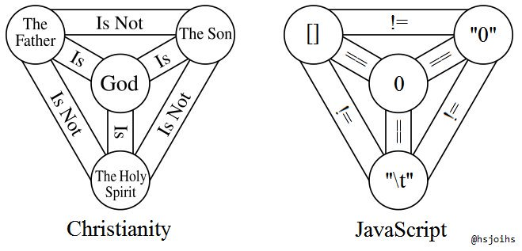
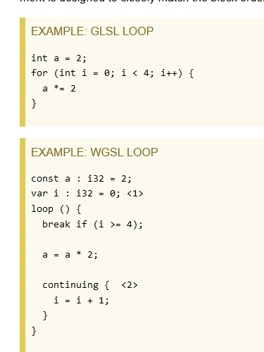

Hello, world! from "ink"WGPU with Rust in 50min
Ink Zhang
Basics
What is WebGPU?
- WebGPU is the next generation of WebGL and a cross-platform API.
- Backends: browser
webgpu,vulkan,DX12,metal… - Implementations
- wgpu for rust
- wgpu-native for c++
- google dawn implementation in chromium
Learn WebGPU

https://javascriptwtf.com/
WebAssembly
Wasm is designed as a portable compilation target for programming languages, enabling deployment on the web for client and server applications.
Meet Rust 
- Rust is a modern programming language that balances high-level ergonomics and low-level control. 1
- memory safety
- zero-cost abstraction
- powerful toolsets
To get started
- Install
rustup(Instructions)
- Cargo is the rust’s official package manager
- Install
wasm-pack(Instructions)
Comparing to OpenGL & C++…
C++
- more flexible with raw pointer
- use a lot of classes, interfaces
- the language of lots of game engines: Source, Unreal Engine
glew+glfw+imgui
Rust
- better error handle & easier async
- no Class, use struct & traits
- new experimental game engines under development: Bevy, Fyrox
wgpu+winit+egui
Hello world!
First, create a rust project using cargo
Use your favorite editor and edit the src/main.rs:
To run the code:
The result should be:
Great! Now the wgpu examples
- The example git repository: link
See the README.md for build instructions, or you can find the pre-build examples in the DEMO part on my GitHub page.
Take a sip of coffee..
Let’s take a short break. Feel free to stretch, refill your coffee, and prepare for our next segment on integrating Rust with wgpu.
Have any questions so far?
Wgpu pipeline
What we have learned from 521 about OpenGL
- Everything is in a giant state machine
glCommands depend on context- Objects are generated and returned as IDs
- Need to bind objects to the current target before performing any actions
- No abstraction for render passes and render pipeline
- Need developers to create their own pipeline by setting things in the context
OpenGL Vulkan WebGPU
OpenGL
- ~80 lines
Vulkan
- ~400 lines
WebGPU
- only 175 lines1
Wgpu pipeline
- Better abstractions (simillar to vulkan)
- Instance: a handle to our GPU, first thing ever created ([
GPU] in WebGPU) - Surface: a platform-specific surface (e.g., a window) onto which rendered images may be presented ([
GPUCanvasContext] in WebGPU)- Careful: need to live as long as the window (canvas)
- Adapter: Handle to a physical graphics and/or compute device ([
GPUAdapter] in WebGPU)
Cont.
- Device: Open connection to a graphics and/or compute device. ([
GPUDevice] in WebGPU)- Responsible for the creation of most rendering and compute resources. These are then used in commands, which are submitted to a [
Queue].
- Responsible for the creation of most rendering and compute resources. These are then used in commands, which are submitted to a [
- Queue: Handle to a command queue on a device ([
GPUQueue] in WebGPU)
The Structure of a RenderPass
RenderPass
This is the vulkan || webgpu abstraction of rendering procedure.
Encoder & Renderpass object will return a CommandBuffer, a complete sequence of commands that may be submitted to a command queue
- BindGroups (maps Buffers & Textures to bind points)
- VertexBufferLayout (VertexAttributes)
- Shader
RenderPass
let mut encoder = device.create_command_encoder(...);
{
// force out of scope since render_pass can't live longer than encoder
let mut render_pass = encoder.begin_render_pass(
&wgpu::RenderPassDescriptor {
label: Some("Render Pass"),
color_attachments: ...,
depth_stencil_attachment: ...,
occlusion_query_set: None,
timestamp_writes: None,
});
render_pass.set_pipeline(...);
render_pass.set_vertex_buffer(...);
render_pass.set_index_buffer(...);
render_pass.set_bind_group(...);
render_pass.draw_indexed();
}
queue.submit(vec![encoder.finish()]);RenderPass
let mut encoder = device.create_command_encoder(...);
{
// force out of scope since render_pass can't live longer than encoder
let mut render_pass = encoder.begin_render_pass(
&wgpu::RenderPassDescriptor {
label: Some("Render Pass"),
color_attachments: ...,
depth_stencil_attachment: ...,
occlusion_query_set: None,
timestamp_writes: None,
});
render_pass.set_pipeline(...);
render_pass.set_vertex_buffer(...);
render_pass.set_index_buffer(...);
render_pass.set_bind_group(...);
render_pass.draw_indexed();
}
queue.submit(vec![encoder.finish()]);RenderPass
let mut encoder = device.create_command_encoder(...);
{
// force out of scope since render_pass can't live longer than encoder
let mut render_pass = encoder.begin_render_pass(
&wgpu::RenderPassDescriptor {
label: Some("Render Pass"),
color_attachments: ...,
depth_stencil_attachment: ...,
occlusion_query_set: None,
timestamp_writes: None,
});
render_pass.set_pipeline(...);
render_pass.set_vertex_buffer(...);
render_pass.set_index_buffer(...);
render_pass.set_bind_group(...);
render_pass.draw_indexed();
}
queue.submit(vec![encoder.finish()]);RenderPipeline
- The collection of resources and states.
- Shader
- Buffers (VertexBuffers, UniformBuffers)
- primitive state
- depth_stencil
- …
RenderPipeline
RenderPipelineLayout
/// A `PipelineLayout` object describes the available binding groups of a pipeline. /// It can be created with [`Device::create_pipeline_layout`].RenderPipeline
/// A `RenderPipeline` object represents a graphics pipeline and its stages, bindings, vertex /// buffers and targets. It can be created with [`Device::create_render_pipeline`].
Wgpu buffers
Bufferis GPU-accessible buffer 1BufferSlice: wgpu side buffer util used to set range of buffers
- It uses
BufferInitDescriptorfor initialization
VertexBuffer
Create a buffer and init with raw data.
let vertex_buffer = device.create_buffer_init(
&wgpu::util::BufferInitDescriptor {
label: Some("Vertex Buffer"),
contents: bytemuck::cast_slice(&vertices),
usage: wgpu::BufferUsages::VERTEX,
});contents: plain datausage: buffer usage
VertexBuffer
Set vertex buffer before the draw call in the render pass.
slot: index inVertexState::buffers- Layouts and buffers are set separately!
BufferSlice: wgpu rust side buffer slice- easy to use (no starts or offsets)
Cont.
// in desc():
wgpu::VertexBufferLayout {
array_stride: mem::size_of::<ModelVertex>() as wgpu::BufferAddress,
step_mode: wgpu::VertexStepMode::Vertex,
attributes: &[
wgpu::VertexAttribute {
format: wgpu::VertexFormat::Float32x3,
offset: 0,
shader_location: 0,
},
wgpu::VertexAttribute {
format: wgpu::VertexFormat::Float32x2,
offset: mem::size_of::<[f32; 3]>() as wgpu::BufferAddress,
shader_location: 1,
},
wgpu::VertexAttribute {
format: wgpu::VertexFormat::Float32x3,
offset: mem::size_of::<[f32; 5]>() as wgpu::BufferAddress,
shader_location: 2,
},
],
}Uniform Buffers
Data that is uniform in the same render pass
- read-only in shader
- can be updated (frequently) in client code
Comparing to
OpenGL:
Cont.
- BindgroupLayout
- defines how shader treats the buffer
Textures
- BindgroupLayout
- the wgpu shader treats Buffers and Textures in the same way –
bindgroup
- the wgpu shader treats Buffers and Textures in the same way –
OpenGL: treatssampler*das a uniform- enable texture unit
- bind texture
- call
glUniform*to set sampler in the shader
WGPU: set bindgroup whereTextureViewandSamplerare specifies saperately
Cont.
wgpu::BindGroupLayoutDescriptor {
entries: &[
wgpu::BindGroupLayoutEntry {
binding: 0,
visibility: wgpu::ShaderStages::FRAGMENT,
ty: wgpu::BindingType::Texture {
multisampled: false,
view_dimension: wgpu::TextureViewDimension::D2,
sample_type: wgpu::TextureSampleType::Float { filterable: true },
},
count: None,
},
wgpu::BindGroupLayoutEntry {
binding: 1,
visibility: wgpu::ShaderStages::FRAGMENT,
ty: wgpu::BindingType::Sampler(wgpu::SamplerBindingType::Filtering),
count: None,
},
],
label: Some("texture_bind_group_layout"),
}Cont.
let diffuse_bind_group = device.create_bind_group(
&wgpu::BindGroupDescriptor {
layout: &texture_bind_group_layout,
entries: &[
wgpu::BindGroupEntry {
binding: 0,
resource: wgpu::BindingResource::TextureView(
&diffuse_texture.view),
},
wgpu::BindGroupEntry {
binding: 1,
resource: wgpu::BindingResource::Sampler(
&diffuse_texture.sampler),
},
],
label: Some("diffuse_bind_group"),
});BindGroup
BindGroupLayout
/// Handle to a binding group layout. /// /// A `BindGroupLayout` is a handle to the GPU-side layout of a binding group. It can be used to /// create a [`BindGroupDescriptor`] object, which in turn can be used to create a [`BindGroup`] /// object with [`Device::create_bind_group`]. A series of `BindGroupLayout`s can also be used to /// create a [`PipelineLayoutDescriptor`], which can be used to create a [`PipelineLayout`]. /// /// It can be created with [`Device::create_bind_group_layout`]. /// /// Corresponds to [WebGPU `GPUBindGroupLayout`]( /// https://gpuweb.github.io/gpuweb/#gpubindgrouplayout).
BindGroup
BindGroup
/// Handle to a binding group. /// /// A `BindGroup` represents the set of resources bound to the bindings described by a /// [`BindGroupLayout`]. It can be created with [`Device::create_bind_group`]. A `BindGroup` can /// be bound to a particular [`RenderPass`] with [`RenderPass::set_bind_group`], or to a /// [`ComputePass`] with [`ComputePass::set_bind_group`]. /// /// Corresponds to [WebGPU `GPUBindGroup`](https://gpuweb.github.io/gpuweb/#gpubindgroup).
BindGroup in WGSL
- Uniform
struct CameraUniform {
view_proj: mat4x4<f32>,
};
@group(1) @binding(0)
var<uniform> camera: CameraUniform;- Texture
WebGPU Shading Language (WGSL) basics
WGPU is excellent!
WGPU is excellent!
Except for WGSL… link
Take a look at ’the most creative language ever


Yes, you don’t need to learn WGSL!
Thanks to Naga
You only need to learn WGSL
Supported Front-ends
SPIR-V first class support
GLSL has many limitations (440+ & Vulkan semantics only)
HLSL/GLSL/MSL -> SPIRV -> WGSL -> SPIRV -> [platform native]
- What a journey!
WGSL types
- basic types
i32,u32,f32,bool
- builtins
@builtin(vertex_index),@builtin(position)
- vectors
vec2f === vec2<f32>vec3u === vec3<u32>vec4i === vec4<i32>- constructors
- matrices
mat2x3<f32> === mat2x3f(row x column)- column major
- constructors
- fixed-size arrays
array<f32,5>, c must be const-declared.
- runtime-sized arrays
- can only be used with storage buffer resources.
@group(0) @binding(0) var<storage> weights: array<f32>;- Use the
arrayLength()builtin function to get the element count.
- Structures
- Automic Types
- Pointers (What?)
WGSL simple example 1
struct VertexOutput {
@builtin(position) clip_position: vec4<f32>,
};
@vertex
fn vs_main(
@builtin(vertex_index) in_vertex_index: u32,
) -> VertexOutput {
var out: VertexOutput;
let x = f32(1 - i32(in_vertex_index)) * 0.5;
let y = f32(i32(in_vertex_index & 1u) * 2 - 1) * 0.5;
out.clip_position = vec4<f32>(x, y, 0.0, 1.0);
return out;
}
@fragment
fn fs_main(in: VertexOutput) -> @location(0) vec4<f32> {
return vec4<f32>(0.3, 0.2, 0.1, 1.0);
}WGSL online demos
Compute Shader in WGPU
Structure of Compute Pass
Compute Pass
- Number of cells to run, the (x,y,z) size of item being processed
- in each cell:
Compute Shader in WGSL
Workgroups builtins
Workgroups shared memories
- like shared memories in OpenGL
- barriers:
workgroupBarrier() - Unlike OpenGL, wgpu encourages computation done within one workgroup. It limits access by using the address space [
var<workgroup>].
// Create zero-initialized workgroup shared data
const workgroup_len : u32 = 8;
var<workgroup> workgroup_data: array<u32, workgroup_len>;
@group(0) @binding(0) var<storage, read> input_data: array<u32>;
@group(0) @binding(1) var<storage, read_write> output_data: u32;
// Our workgroup will execute workgroup_len invocations of the shader
@compute @workgroup_size(workgroup_len, 1, 1)
fn computeMain(@builtin(local_invocation_id) local_id: vec3<u32>) {
// Each invocation will populate the shared workgroup data from the input data
workgroup_data[local_id.x] = input_data[local_id.x];
// Wait for each invocation to populate their region of local data
workgroupBarrier();
// Get the sum of the elements in the array
// Input Data: [0, 1, 2, 3, 4, 5, 6, 7]
// Loop Pass 1: [1, 5, 9, 13, 4, 5, 6, 7]
// Loop Pass 2: [6, 22, 9, 13, 4, 5, 6, 7]
for (var current_size = workgroup_len / 2; current_size >= 1; current_size /= 2) {
var sum: u32 = 0;
if (local_id.x < current_size) {
// Read current values from workgroup_data
sum = workgroup_data[local_id.x * 2] + workgroup_data[local_id.x * 2 + 1];
}
// Wait until all invocations have finished reading from workgroup_data, and have calculated their respective sums
workgroupBarrier();
if (local_id.x < current_size) {
workgroup_data[local_id.x] = sum;
}
// Wait for each invocation to finish one iteration of the loop, and to have finished writing to workgroup_data
workgroupBarrier();
}
// Write the sum to the output
if (local_id.x == 0) {
output_data = workgroup_data[0];
}
}Storage buffers
@group(0) @binding(0) var<storage, read_write> v_indices: array<u32>;
@group(1) @binding(0) var texture: texture_storage_2d<rgba8unorm, write>;
// in fn main():
textureStore(texture, location, value);var<storage, S>Sdenotes read-write access type
compute_example
If you have cloned the project, go to ./compute_example/
or download compute_example.zip